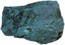
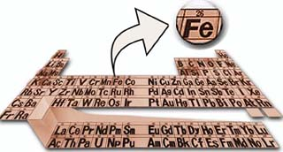

DEMÝRDEKÝ SIR
Demir, Kuran'da dikkat çekilen elementlerden biridir. Kuran'ýn "Hadid", yani "Demir" adlý suresinde þöyle buyrulur:
“...
Ve kendisinde çetin bir sertlik ve insanlar için
(çeþitli)
yararlar bulunan demiri de indirdik...„
(Hadid Suresi, 25)
Ayette, demir için özel olarak kullanýlan "indirme" kelimesi, mecazi olarak insanlarýn hizmetine verilme anlamýnda düþünülebilir. Fakat kelimenin, "gökten fiziksel olarak indirme" þeklindeki gerçek anlamý dikkate alýndýðýnda, ayetin çok önemli bir bilimsel mucize içerdiði görülmektedir.
Çünkü modern astronomik bulgular, Dünyamýz'daki demir madeninin dýþ uzaydaki dev yýldýzlardan geldiðini ortaya koymuþtur.

Tüm bunlardan anlaþýlacaðý gibi demir madeni Dünya'da oluþmamýþ, gök taþlarý vasýtasýyla süpernovalardan taþýnarak, aynen ayette bildirildiði þekilde "Dünyaya indirilmiþtir". Bilginin Kuran'ýn indirilmiþ olduðu 7. yüzyýlda bilimsel olarak tespit edilemeyeceði ise açýktýr. Ancak bu gerçek, herþeyi sonsuz bilgisiyle kuþatan Allah'ýn sözü olan Kuran'da yer almaktadýr.
Bunun yanýsýra içinde demirden bahsedilen Hadid Suresi'nin 25. ayeti oldukça ilginç iki matematiksel þifre içermektedir:
| "El-Hadid"
Kuran'ýn 57. suresidir. "El hadid" kelimesinin Arapça'daki sayýsal deðeri,
yani ebcedi hesaplandýðýnda karþýmýza çýkan rakam da aynýdýr: "57"
Sadece "hadid" kelimesinin sayýsal deðeri 26'dýr. 26 sayýsý ise demirin atom numarasýdýr. |
 |
El-Hadid Suresi Kuran'ýn 57. suresidir, El-Hadid kelimesinin Arapça'daki sayýsal deðeri ise 57'dir. Sadece "hadid" kelimesinin sayýsal deðeri 26'dýr. Yukarýdaki periyodik cetvelden de görüldüðü gibi 26 sayýsý demirin atom numarasýdýr. Üstün kudret sahibi olan Allah, Hadid Suresi'nde indirdiði ayetle hem demirin nasýl oluþtuðuna dikkat çekmekte hem de ayetin içerdiði matematiksel þifreler ile bilimsel bir mucizeyi bize göstermektedir. |